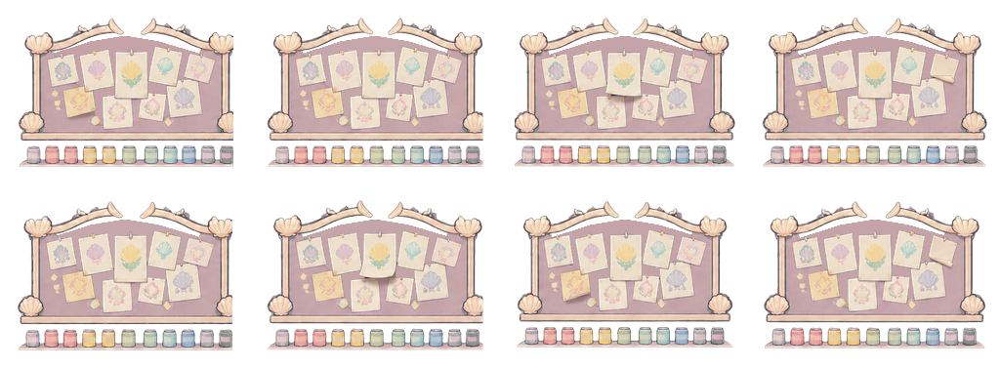
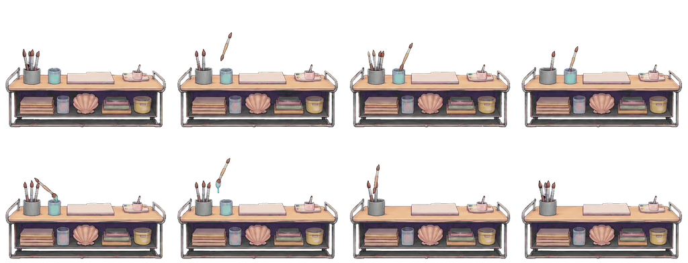
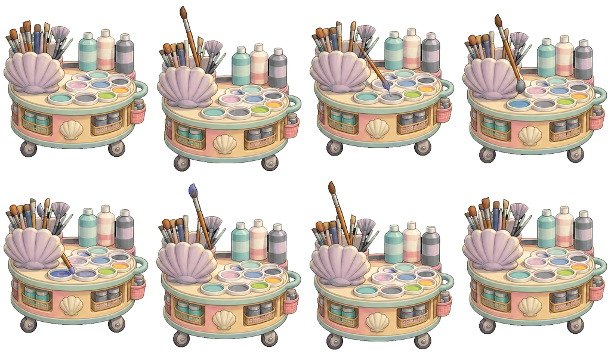
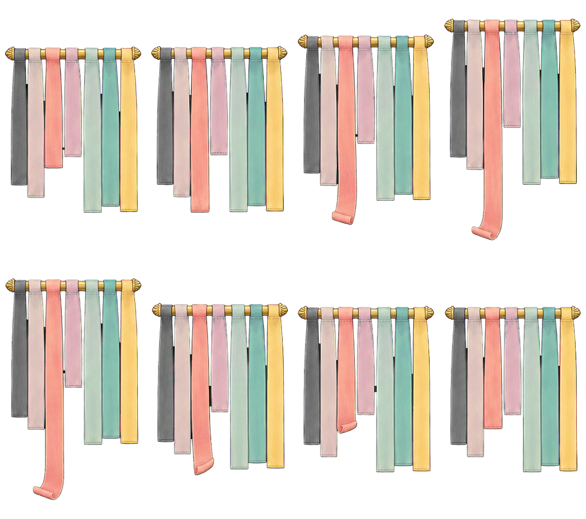

HALL-SOURCE-SIGN_BUBBLE_BATH · 4.6/5
Three soft ivory bubbles sit on a scalloped cream/gold badge. Warm dark contours and one broad pearl highlight fit the painted toy-playset language. The bubbles remain distinct; actual wayfinding meaning at the mounted scale is a separate review.
assets/flats/castle/main_hall_redraw_2026-08-03/signs/sign_bubble_bath.png · 3a43e1fc23f95f9f3a2ec256861d418017d783bbf0d30f7b85fee677838aa3c4HALL-SOURCE-SIGN_CRAFT_ROOM · 4.6/5
The rounded paint palette and brush carry distinct pastel paint dots inside the common shell badge. Warm-brown contour, cream frame and restrained painted highlights keep the emblem coherent with the other room icons. Small brush-tip readability requires the mounted view.
assets/flats/castle/main_hall_redraw_2026-08-03/signs/sign_craft_room.png · 17ccf96d936d557b28a88960d8793f58ceff73fa5328b42c7c41c4f65c138e2eHALL-SOURCE-SIGN_MERMAID_POOL · 4.6/5
One aqua drop is immediately distinct against the cream badge. Its broad graphic highlight, plum rim and simple mass fit the icon family; there is no tiny text dependency in this source. Navigation/context acceptance remains separate.
assets/flats/castle/main_hall_redraw_2026-08-03/signs/sign_mermaid_pool.png · 8ae6239cc8d01eecaa741842b591b2388659ff92929b9dec336e62ffa7ab4033HALL-SOURCE-SIGN_PLAYROOM · 4.6/5

A rounded teddy face, clear ears and simple smile read coherently inside the shell badge. Warm brown/plum lines and soft peach fills fit the playful room family. This source opinion does not pass the actual route or child recognition test.
assets/flats/castle/main_hall_redraw_2026-08-03/signs/sign_playroom.png · 22d9a3df8eda3b95ae93250165a64a947b4157a70b4405f90dc4d600edccd7dfCRAFT-SOURCE-IDEA_BOARD · 4.5/5

Cream shell framing, pastel paper shapes and brown/plum contours fit the room. The small low-contrast note pictures and densely arranged paint jars keep the source at the drafting floor; mounted note-flip clarity and target emphasis remain priorities.
assets/flats/castle/interactions_v2/craft_room_idea_board_sheet.png · a88d626f5d455c8850f195b7b8ccb0f9ac75680f860a219c297bd8206ab8da03CRAFT-SOURCE-PAINT_TABLE · 4.4/5

The shell-trimmed table is coherent, but the primary moving brush is thin and low-emphasis beside many tiny supplies. Several brush states are fragile at small scale. Preserve the table art and test a stronger local working brush before commissioning a whole furniture redraw.
assets/flats/castle/interactions_v2/craft_room_paint_table_sheet.png · 2beb7dd4e5e731acfe0a402f45aef195ac2a886c6ec982eecdc2b16e9ea7ecbaCRAFT-SOURCE-PALETTE · 4.5/5

The broad pastel palette wells and rounded wheeled shell cart fit the room. Brush contact and pigment differences are small compared with the supply detail, so the full sheet stays at the source floor. Mixing direction, well contact and the visible colour consequence require the native action.
assets/flats/castle/interactions_v2/craft_room_palette_sheet.png · c36ee3bb19840d9977961f6525f3d543a38bc599335a0ad82bfd11fb60850071CRAFT-SOURCE-RIBBON_RACK · 4.6/5

Broad pastel ribbons, rounded gold rod ends and clear separated strips form a strong intact painted prop. The pink ribbon extension is visible in the authored cells. Rod position varies across cells; do not infer a stable unroll/retract sequence or invent a continuity defect without the actual configured timeline and mounted capture.
assets/flats/castle/interactions_v2/craft_room_ribbon_rack_sheet.png · 3867c9ba410fa68d2688f9eae9c789a832b49c1455ff94b801947bf5f43b8e01These are CSS views of exact source regions with one uniform scale. No appearance pixels, contour or source file were edited.
CRAFT-IDEA_BOARD-CELL-00 · 4.5/5
Cream shell framing, pastel paper shapes and brown/plum contours fit the room. The small low-contrast note pictures and densely arranged paint jars keep the source at the drafting floor; mounted note-flip clarity and target emphasis remain priorities. Individually inspected atlas cell0, column0/row0. The declared source/timeline mapping is recorded, but its actual mounted action is not passed.
Region [0, 0, 256, 188]; whole-source hash a88d626f5d455c8850f195b7b8ccb0f9ac75680f860a219c297bd8206ab8da03CRAFT-IDEA_BOARD-CELL-01 · 4.5/5
Cream shell framing, pastel paper shapes and brown/plum contours fit the room. The small low-contrast note pictures and densely arranged paint jars keep the source at the drafting floor; mounted note-flip clarity and target emphasis remain priorities. Individually inspected atlas cell1, column1/row0. The declared source/timeline mapping is recorded, but its actual mounted action is not passed.
Region [256, 0, 256, 188]; whole-source hash a88d626f5d455c8850f195b7b8ccb0f9ac75680f860a219c297bd8206ab8da03CRAFT-IDEA_BOARD-CELL-02 · 4.5/5
Cream shell framing, pastel paper shapes and brown/plum contours fit the room. The small low-contrast note pictures and densely arranged paint jars keep the source at the drafting floor; mounted note-flip clarity and target emphasis remain priorities. Individually inspected atlas cell2, column2/row0. The declared source/timeline mapping is recorded, but its actual mounted action is not passed.
Region [512, 0, 256, 188]; whole-source hash a88d626f5d455c8850f195b7b8ccb0f9ac75680f860a219c297bd8206ab8da03CRAFT-IDEA_BOARD-CELL-03 · 4.5/5
Cream shell framing, pastel paper shapes and brown/plum contours fit the room. The small low-contrast note pictures and densely arranged paint jars keep the source at the drafting floor; mounted note-flip clarity and target emphasis remain priorities. Individually inspected atlas cell3, column3/row0. The declared source/timeline mapping is recorded, but its actual mounted action is not passed.
Region [768, 0, 256, 188]; whole-source hash a88d626f5d455c8850f195b7b8ccb0f9ac75680f860a219c297bd8206ab8da03CRAFT-IDEA_BOARD-CELL-04 · 4.5/5
Cream shell framing, pastel paper shapes and brown/plum contours fit the room. The small low-contrast note pictures and densely arranged paint jars keep the source at the drafting floor; mounted note-flip clarity and target emphasis remain priorities. Individually inspected atlas cell4, column0/row1. The declared source/timeline mapping is recorded, but its actual mounted action is not passed.
Region [0, 188, 256, 188]; whole-source hash a88d626f5d455c8850f195b7b8ccb0f9ac75680f860a219c297bd8206ab8da03CRAFT-IDEA_BOARD-CELL-05 · 4.5/5
Cream shell framing, pastel paper shapes and brown/plum contours fit the room. The small low-contrast note pictures and densely arranged paint jars keep the source at the drafting floor; mounted note-flip clarity and target emphasis remain priorities. Individually inspected atlas cell5, column1/row1. The declared source/timeline mapping is recorded, but its actual mounted action is not passed.
Region [256, 188, 256, 188]; whole-source hash a88d626f5d455c8850f195b7b8ccb0f9ac75680f860a219c297bd8206ab8da03CRAFT-IDEA_BOARD-CELL-06 · 4.5/5
Cream shell framing, pastel paper shapes and brown/plum contours fit the room. The small low-contrast note pictures and densely arranged paint jars keep the source at the drafting floor; mounted note-flip clarity and target emphasis remain priorities. Individually inspected atlas cell6, column2/row1. The declared source/timeline mapping is recorded, but its actual mounted action is not passed.
Region [512, 188, 256, 188]; whole-source hash a88d626f5d455c8850f195b7b8ccb0f9ac75680f860a219c297bd8206ab8da03CRAFT-IDEA_BOARD-CELL-07 · 4.5/5
Cream shell framing, pastel paper shapes and brown/plum contours fit the room. The small low-contrast note pictures and densely arranged paint jars keep the source at the drafting floor; mounted note-flip clarity and target emphasis remain priorities. Individually inspected atlas cell7, column3/row1. The declared source/timeline mapping is recorded, but its actual mounted action is not passed.
Region [768, 188, 256, 188]; whole-source hash a88d626f5d455c8850f195b7b8ccb0f9ac75680f860a219c297bd8206ab8da03CRAFT-PAINT_TABLE-CELL-00 · 4.5/5
The shell-trimmed table is coherent, but the primary moving brush is thin and low-emphasis beside many tiny supplies. Several brush states are fragile at small scale. Preserve the table art and test a stronger local working brush before commissioning a whole furniture redraw. Individually inspected atlas cell0, column0/row0. The declared source/timeline mapping is recorded, but its actual mounted action is not passed.
Region [0, 0, 256, 196]; whole-source hash 2beb7dd4e5e731acfe0a402f45aef195ac2a886c6ec982eecdc2b16e9ea7ecbaCRAFT-PAINT_TABLE-CELL-01 · 4.4/5
The shell-trimmed table is coherent, but the primary moving brush is thin and low-emphasis beside many tiny supplies. Several brush states are fragile at small scale. Preserve the table art and test a stronger local working brush before commissioning a whole furniture redraw. Individually inspected atlas cell1, column1/row0. The declared source/timeline mapping is recorded, but its actual mounted action is not passed.
Region [256, 0, 256, 196]; whole-source hash 2beb7dd4e5e731acfe0a402f45aef195ac2a886c6ec982eecdc2b16e9ea7ecbaCRAFT-PAINT_TABLE-CELL-02 · 4.4/5
The shell-trimmed table is coherent, but the primary moving brush is thin and low-emphasis beside many tiny supplies. Several brush states are fragile at small scale. Preserve the table art and test a stronger local working brush before commissioning a whole furniture redraw. Individually inspected atlas cell2, column2/row0. The declared source/timeline mapping is recorded, but its actual mounted action is not passed.
Region [512, 0, 256, 196]; whole-source hash 2beb7dd4e5e731acfe0a402f45aef195ac2a886c6ec982eecdc2b16e9ea7ecbaCRAFT-PAINT_TABLE-CELL-03 · 4.4/5
The shell-trimmed table is coherent, but the primary moving brush is thin and low-emphasis beside many tiny supplies. Several brush states are fragile at small scale. Preserve the table art and test a stronger local working brush before commissioning a whole furniture redraw. Individually inspected atlas cell3, column3/row0. The declared source/timeline mapping is recorded, but its actual mounted action is not passed.
Region [768, 0, 256, 196]; whole-source hash 2beb7dd4e5e731acfe0a402f45aef195ac2a886c6ec982eecdc2b16e9ea7ecbaCRAFT-PAINT_TABLE-CELL-04 · 4.4/5
The shell-trimmed table is coherent, but the primary moving brush is thin and low-emphasis beside many tiny supplies. Several brush states are fragile at small scale. Preserve the table art and test a stronger local working brush before commissioning a whole furniture redraw. Individually inspected atlas cell4, column0/row1. The declared source/timeline mapping is recorded, but its actual mounted action is not passed.
Region [0, 196, 256, 196]; whole-source hash 2beb7dd4e5e731acfe0a402f45aef195ac2a886c6ec982eecdc2b16e9ea7ecbaCRAFT-PAINT_TABLE-CELL-05 · 4.4/5
The shell-trimmed table is coherent, but the primary moving brush is thin and low-emphasis beside many tiny supplies. Several brush states are fragile at small scale. Preserve the table art and test a stronger local working brush before commissioning a whole furniture redraw. Individually inspected atlas cell5, column1/row1. The declared source/timeline mapping is recorded, but its actual mounted action is not passed.
Region [256, 196, 256, 196]; whole-source hash 2beb7dd4e5e731acfe0a402f45aef195ac2a886c6ec982eecdc2b16e9ea7ecbaCRAFT-PAINT_TABLE-CELL-06 · 4.5/5
The shell-trimmed table is coherent, but the primary moving brush is thin and low-emphasis beside many tiny supplies. Several brush states are fragile at small scale. Preserve the table art and test a stronger local working brush before commissioning a whole furniture redraw. Individually inspected atlas cell6, column2/row1. The declared source/timeline mapping is recorded, but its actual mounted action is not passed.
Region [512, 196, 256, 196]; whole-source hash 2beb7dd4e5e731acfe0a402f45aef195ac2a886c6ec982eecdc2b16e9ea7ecbaCRAFT-PAINT_TABLE-CELL-07 · 4.5/5
The shell-trimmed table is coherent, but the primary moving brush is thin and low-emphasis beside many tiny supplies. Several brush states are fragile at small scale. Preserve the table art and test a stronger local working brush before commissioning a whole furniture redraw. Individually inspected atlas cell7, column3/row1. The declared source/timeline mapping is recorded, but its actual mounted action is not passed.
Region [768, 196, 256, 196]; whole-source hash 2beb7dd4e5e731acfe0a402f45aef195ac2a886c6ec982eecdc2b16e9ea7ecbaCRAFT-PALETTE-CELL-00 · 4.6/5
The broad pastel palette wells and rounded wheeled shell cart fit the room. Brush contact and pigment differences are small compared with the supply detail, so the full sheet stays at the source floor. Mixing direction, well contact and the visible colour consequence require the native action. Individually inspected atlas cell0, column0/row0. The declared source/timeline mapping is recorded, but its actual mounted action is not passed.
Region [0, 0, 256, 297]; whole-source hash c36ee3bb19840d9977961f6525f3d543a38bc599335a0ad82bfd11fb60850071CRAFT-PALETTE-CELL-01 · 4.5/5
The broad pastel palette wells and rounded wheeled shell cart fit the room. Brush contact and pigment differences are small compared with the supply detail, so the full sheet stays at the source floor. Mixing direction, well contact and the visible colour consequence require the native action. Individually inspected atlas cell1, column1/row0. The declared source/timeline mapping is recorded, but its actual mounted action is not passed.
Region [256, 0, 256, 297]; whole-source hash c36ee3bb19840d9977961f6525f3d543a38bc599335a0ad82bfd11fb60850071CRAFT-PALETTE-CELL-02 · 4.5/5
The broad pastel palette wells and rounded wheeled shell cart fit the room. Brush contact and pigment differences are small compared with the supply detail, so the full sheet stays at the source floor. Mixing direction, well contact and the visible colour consequence require the native action. Individually inspected atlas cell2, column2/row0. The declared source/timeline mapping is recorded, but its actual mounted action is not passed.
Region [512, 0, 256, 297]; whole-source hash c36ee3bb19840d9977961f6525f3d543a38bc599335a0ad82bfd11fb60850071CRAFT-PALETTE-CELL-03 · 4.5/5
The broad pastel palette wells and rounded wheeled shell cart fit the room. Brush contact and pigment differences are small compared with the supply detail, so the full sheet stays at the source floor. Mixing direction, well contact and the visible colour consequence require the native action. Individually inspected atlas cell3, column3/row0. The declared source/timeline mapping is recorded, but its actual mounted action is not passed.
Region [768, 0, 256, 297]; whole-source hash c36ee3bb19840d9977961f6525f3d543a38bc599335a0ad82bfd11fb60850071CRAFT-PALETTE-CELL-04 · 4.5/5
The broad pastel palette wells and rounded wheeled shell cart fit the room. Brush contact and pigment differences are small compared with the supply detail, so the full sheet stays at the source floor. Mixing direction, well contact and the visible colour consequence require the native action. Individually inspected atlas cell4, column0/row1. The declared source/timeline mapping is recorded, but its actual mounted action is not passed.
Region [0, 297, 256, 297]; whole-source hash c36ee3bb19840d9977961f6525f3d543a38bc599335a0ad82bfd11fb60850071CRAFT-PALETTE-CELL-05 · 4.5/5
The broad pastel palette wells and rounded wheeled shell cart fit the room. Brush contact and pigment differences are small compared with the supply detail, so the full sheet stays at the source floor. Mixing direction, well contact and the visible colour consequence require the native action. Individually inspected atlas cell5, column1/row1. The declared source/timeline mapping is recorded, but its actual mounted action is not passed.
Region [256, 297, 256, 297]; whole-source hash c36ee3bb19840d9977961f6525f3d543a38bc599335a0ad82bfd11fb60850071CRAFT-PALETTE-CELL-06 · 4.6/5
The broad pastel palette wells and rounded wheeled shell cart fit the room. Brush contact and pigment differences are small compared with the supply detail, so the full sheet stays at the source floor. Mixing direction, well contact and the visible colour consequence require the native action. Individually inspected atlas cell6, column2/row1. The declared source/timeline mapping is recorded, but its actual mounted action is not passed.
Region [512, 297, 256, 297]; whole-source hash c36ee3bb19840d9977961f6525f3d543a38bc599335a0ad82bfd11fb60850071CRAFT-PALETTE-CELL-07 · 4.6/5
The broad pastel palette wells and rounded wheeled shell cart fit the room. Brush contact and pigment differences are small compared with the supply detail, so the full sheet stays at the source floor. Mixing direction, well contact and the visible colour consequence require the native action. Individually inspected atlas cell7, column3/row1. The declared source/timeline mapping is recorded, but its actual mounted action is not passed.
Region [768, 297, 256, 297]; whole-source hash c36ee3bb19840d9977961f6525f3d543a38bc599335a0ad82bfd11fb60850071CRAFT-RIBBON_RACK-CELL-00 · 4.6/5
Broad pastel ribbons, rounded gold rod ends and clear separated strips form a strong intact painted prop. The pink ribbon extension is visible in the authored cells. Rod position varies across cells; do not infer a stable unroll/retract sequence or invent a continuity defect without the actual configured timeline and mounted capture. Individually inspected atlas cell0, column0/row0. The declared source/timeline mapping is recorded, but its actual mounted action is not passed.
Region [0, 0, 256, 454]; whole-source hash 3867c9ba410fa68d2688f9eae9c789a832b49c1455ff94b801947bf5f43b8e01CRAFT-RIBBON_RACK-CELL-01 · 4.6/5
Broad pastel ribbons, rounded gold rod ends and clear separated strips form a strong intact painted prop. The pink ribbon extension is visible in the authored cells. Rod position varies across cells; do not infer a stable unroll/retract sequence or invent a continuity defect without the actual configured timeline and mounted capture. Individually inspected atlas cell1, column1/row0. The declared source/timeline mapping is recorded, but its actual mounted action is not passed.
Region [256, 0, 256, 454]; whole-source hash 3867c9ba410fa68d2688f9eae9c789a832b49c1455ff94b801947bf5f43b8e01CRAFT-RIBBON_RACK-CELL-02 · 4.6/5
Broad pastel ribbons, rounded gold rod ends and clear separated strips form a strong intact painted prop. The pink ribbon extension is visible in the authored cells. Rod position varies across cells; do not infer a stable unroll/retract sequence or invent a continuity defect without the actual configured timeline and mounted capture. Individually inspected atlas cell2, column2/row0. The declared source/timeline mapping is recorded, but its actual mounted action is not passed.
Region [512, 0, 256, 454]; whole-source hash 3867c9ba410fa68d2688f9eae9c789a832b49c1455ff94b801947bf5f43b8e01CRAFT-RIBBON_RACK-CELL-03 · 4.6/5
Broad pastel ribbons, rounded gold rod ends and clear separated strips form a strong intact painted prop. The pink ribbon extension is visible in the authored cells. Rod position varies across cells; do not infer a stable unroll/retract sequence or invent a continuity defect without the actual configured timeline and mounted capture. Individually inspected atlas cell3, column3/row0. The declared source/timeline mapping is recorded, but its actual mounted action is not passed.
Region [768, 0, 256, 454]; whole-source hash 3867c9ba410fa68d2688f9eae9c789a832b49c1455ff94b801947bf5f43b8e01CRAFT-RIBBON_RACK-CELL-04 · 4.6/5
Broad pastel ribbons, rounded gold rod ends and clear separated strips form a strong intact painted prop. The pink ribbon extension is visible in the authored cells. Rod position varies across cells; do not infer a stable unroll/retract sequence or invent a continuity defect without the actual configured timeline and mounted capture. Individually inspected atlas cell4, column0/row1. The declared source/timeline mapping is recorded, but its actual mounted action is not passed.
Region [0, 454, 256, 454]; whole-source hash 3867c9ba410fa68d2688f9eae9c789a832b49c1455ff94b801947bf5f43b8e01CRAFT-RIBBON_RACK-CELL-05 · 4.6/5
Broad pastel ribbons, rounded gold rod ends and clear separated strips form a strong intact painted prop. The pink ribbon extension is visible in the authored cells. Rod position varies across cells; do not infer a stable unroll/retract sequence or invent a continuity defect without the actual configured timeline and mounted capture. Individually inspected atlas cell5, column1/row1. The declared source/timeline mapping is recorded, but its actual mounted action is not passed.
Region [256, 454, 256, 454]; whole-source hash 3867c9ba410fa68d2688f9eae9c789a832b49c1455ff94b801947bf5f43b8e01CRAFT-RIBBON_RACK-CELL-06 · 4.6/5
Broad pastel ribbons, rounded gold rod ends and clear separated strips form a strong intact painted prop. The pink ribbon extension is visible in the authored cells. Rod position varies across cells; do not infer a stable unroll/retract sequence or invent a continuity defect without the actual configured timeline and mounted capture. Individually inspected atlas cell6, column2/row1. The declared source/timeline mapping is recorded, but its actual mounted action is not passed.
Region [512, 454, 256, 454]; whole-source hash 3867c9ba410fa68d2688f9eae9c789a832b49c1455ff94b801947bf5f43b8e01CRAFT-RIBBON_RACK-CELL-07 · 4.6/5
Broad pastel ribbons, rounded gold rod ends and clear separated strips form a strong intact painted prop. The pink ribbon extension is visible in the authored cells. Rod position varies across cells; do not infer a stable unroll/retract sequence or invent a continuity defect without the actual configured timeline and mounted capture. Individually inspected atlas cell7, column3/row1. The declared source/timeline mapping is recorded, but its actual mounted action is not passed.
Region [768, 454, 256, 454]; whole-source hash 3867c9ba410fa68d2688f9eae9c789a832b49c1455ff94b801947bf5f43b8e01